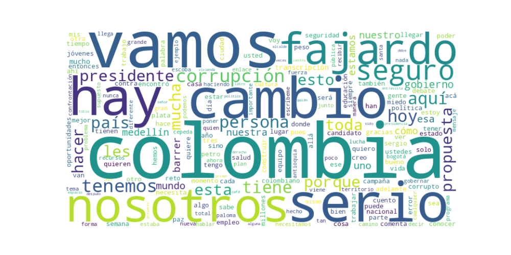

Seguidores: 310,388
ANÁLISIS DE COMUNICACIÓN POLÍTICA: CANDIDATO SERGIO FAJARDO
1. Perfil de Comunicación
Sergio Fajardo emplea un estilo de comunicación cercano, pedagógico y reflexivo, combinando un tono formal en propuestas técnicas con un lenguaje accesible y popular para conectar con audiencias diversas. Su discurso se asemeja al de un profesor o guía, explicando problemas y soluciones con detalle, lo que refleja su formación académica y experiencia en gestión pública. Aunque utiliza un lenguaje claro, evita la simplificación excesiva, apostando por argumentos estructurados y ejemplos concretos (como referencias a su gestión en Medellín). Es un comunicador que privilegia la coherencia y la serenidad sobre la retórica emocional explosiva.
2. Temas Principales
- Lucha contra la corrupción: El tema más recurrente y articulado como eje central. Usa metáforas potentes (“barrer la corrupción”, “escoba”) y ejemplos de escándalos recientes (UNGRD, Papá Pitufo) para denunciar un “sistema corrupto”. Propone una Agencia Nacional Anticorrupción y vigilancia de 30 proyectos clave.
- Seguridad y convivencia: Aborda la inseguridad desde una perspectiva integral, criticando la “Paz Total” como “caos total”. Propone el Plan Guardián, fortalecer la fuerza pública y combatir la extorsión. Ejemplo: “La seguridad es un bien público que los colombianos reclaman hoy con mucha fuerza”.
- Educación y cultura: Presenta la educación como herramienta de transformación social (“la educación es el pasaporte a la libertad”). Promete 400 parques educativos, bilingüismo nacional y aumentar el presupuesto cultural. Ejemplo: “La Cultura será transversal a todo nuestro Gobierno”.
- Oportunidades para jóvenes: Propuestas concretas como 100.000 viviendas para menores de 30 años, empleo joven (“menos camello pa’l camello”) y reforma del ICETEX. Usa testimonios de jóvenes para ilustrar las dificultades.
- Desarrollo regional: Critica el centralismo y promete un gobierno itinerante (“4 días en Bogotá, 3 en regiones”). Destaca infraestructura vial, conectividad rural y apoyo a productores (café, industria nacional).
3. Tono y Sentimiento Dominante
El tono general es propositivo, serio y esperanzador, pero con una crítica firme a sus adversarios (a quienes acusa de polarización, corrupción o ineptitud). Rechaza el odio y la confrontación, aunque no duda en señalar “mentiras” o “trampas” de otros candidatos. Hay un optimismo basado en la experiencia (“lo hicimos en Medellín, lo haremos en Colombia”) y un llamado a la “decencia” y la “coherencia”. El sentimiento subyacente es de urgencia reformista, pero sin pánico.
4. Palabras Clave de Poder
- “Cambio. Serio. Seguro.”: Eslogan central, repetido como un mantra.
- “Barrer la corrupción” / “Escoba”: Símbolo de su lucha anticorrupción.
- “Vamos a construir sobre lo construido”: Rechazo a la tabula rasa.
- “Decencia”, “coherencia”, “transparencia”: Valores de su identidad política.
- “Experiencia” / “Saber gobernar”: Diferenciación frente a rivales.
- “Polarización”: Término negativo usado para descalificar a Petro-Uribe y sus candidatos.
- “Convicción” y “respeto”: Antítesis de la agresión verbal.
5. Conclusión Estratégica
La estrategia de comunicación de Fajardo apunta a posicionarse como la alternativa seria y técnica frente a la polarización, dirigida a un electorado cansado del conflicto político, educado o aspirante a movilidad social, y sensibilizado por la corrupción. Su discurso busca evocar confianza a través de la experiencia demostrada (alcalde, gobernador) y un optimismo pragmático, presentándose como el “presidente que resuelve”. Aunque intenta conectar con jóvenes mediante formatos digitales (Roblox, TikTok, brigadas digitales), su núcleo duro parece ser la clase media profesional y urbana que valora la gestión por encima del carisma. En resumen, Fajardo apuesta por una comunicación basada en credibilidad y propuestas detalladas, esperando que el electorado priorice la competencia sobre la pasión ideológica.
Reporte de Análisis Estratégico: Comunicación Digital de Éxito
1. Resumen del Patrón de Éxito: El éxito de la comunicación del candidato se basa en una fórmula dual: una narrativa de esperanza y acción colectiva combinada con una crítica focalizada y combativa. No es un mensaje puramente positivo ni únicamente confrontacional. Su patrón consiste en presentarse como el líder de un movimiento ciudadano ("nosotros") que, desde la valentía y la coherencia, enfrenta poderosas adversidades ("maquinarias llenas de plata", "corrupción", "confrontación") para lograr un "cambio serio y seguro". La emoción predominante es la esperanza movilizadora, respaldada por un sentido de urgencia y de lucha David vs. Goliat.
2. Tácticas de Comunicación Clave: * Inclusividad y Construcción del "Nosotros": Utiliza constantemente un lenguaje colectivo ("vamos", "juntos", "nuestra", "nuestros") para diluir la figura del candidato individual y fortalecer la idea de un movimiento. Invita a la audiencia a ser parte activa ("tu celular será el nuevo volante"). * Contraste Definido y Enemigos Claros: Define con precisión a sus antagonistas: la corrupción (como un "nido" en el poder), la confrontación política (como una trampa), y actores específicos del gobierno saliente (Petro, Uribe, Daniel Quintero). Esto simplifica el conflicto y posiciona su campaña como la única alternativa limpia y conciliadora. * Llamados a la Acción Concretos y de Baja Barrera: Cada pieza de contenido exitoso termina con una instrucción clara y fácil de ejecutar: comentar una palabra ("Brigadas", "Cultura"), enviar un mensaje de WhatsApp a un número específico, pegar un afiche, o donar. Transforma el engagement emocional en acción tangible y medible. * Comunicación en Capas: De lo Épico a lo Cotidiano: Alterna discursos de gran visión ("Colombia no es una montaña imposible") con interacciones humanas y cercanas (la visita sorpresa al profesor, el diccionario llanero). Esto equilibra su imagen entre estadista y persona accesible, reforzando su narrativa de coherencia y autenticidad.
3. Temas de Mayor Resonancia: 1. Lucha contra la Corrupción: Es el pilar central. No es un tema más; es el "nido" que hay que "barrer" de la Casa de Nariño. Se vincula directamente con el sufrimiento de "los más necesitados". 2. Unidad vs. Confrontación: Se presenta como el antídoto a la polarización ("romper esta confrontación"). Su mensaje apela al cansancio del país frente a la lucha política eterna. 3. Seguridad Ciudadana: Lo identifica como la principal emergencia y demanda nacional, ofreciendo planes territoriales específicos (Catatumbo, Chocó, Cauca) que demuestran conocimiento técnico. 4. Campaña Ciudadana y Austeridad: La narrativa de las "Brigadas Digitales" y la campaña como "David contra Goliat" moviliza a una base que se siente empoderada y parte de una causa justa contra poderes establecidos.
4. Perfil de la Audiencia Implícita: El discurso apunta a una audiencia joven, digitalmente activa y políticamente frustrada, pero aún esperanzada. El lenguaje es moderno ("la calle es digital"), los canales son nativos (WhatsApp, Instagram) y el llamado es a la participación creativa. También busca conectar con ciudadanos indecisos, de centro o moderados, cansados de la polarización y que valoran la "coherencia", el "carácter" y los "resultados" sobre la ideología o el grito. Es un llamado a quienes desconfían de la política tradicional pero no han renunciado a la acción cívica.
5. Conclusión Estratégica: La clave fundamental del poder de su discurso es la hibridación exitosa de tres narrativas que suelen estar separadas en la política tradicional: 1. La del Movimiento Social (horizontal, participativo, ciudadano). 2. La del Técnico Capacitado (con planes específicos, que "sabe gobernar"). 3. La del Líder Valiente y Coherente (que enfrenta poderes establecidos sin venderse).
Su potencia reside en presentar el "Cambio. Serio. Seguro." no como un eslogan, sino como una promesa triple: es un cambio de sistema (anti-corrupción), de estilo (no confrontacional) y de gestión (eficaz). Se diferencia del discurso político tradicional porque no vende solo un programa de gobierno o una ideología; vende una identidad colectiva y una misión en la que el ciudadano es el protagonista. La herramienta más poderosa no es su palabra, sino el celular de su seguidor.

Caption: No se asusten. Colombia tiene salida y no es la confrontación. Es barrer la corrupción, tender puentes y construir desde lo que funciona. Para eso estamos aquí y llegaremos a las Casa de Nariño con ustedes.
Likes: 1,440 | Comentarios: 145 | Reproducciones: 14,720
Ver en InstagramCaption: Las Brigadas Digitales son nuestra nueva forma de hacer campaña: abierta, participativa y con tu voz en el centro de la conversación. Comenta “Brigadas” o escríbeme al 3208349958 y únete a mi equipo para lograr el CAMBIO. SERIO. SEGURO que Colombia merece.
Likes: 361 | Comentarios: 49 | Reproducciones: 3,879
Ver en InstagramCaption: El 7 de agosto cantaremos juntos el himno nacional. 🇨🇴
Likes: 1,935 | Comentarios: 82 | Reproducciones: 20,827
Ver en Instagram